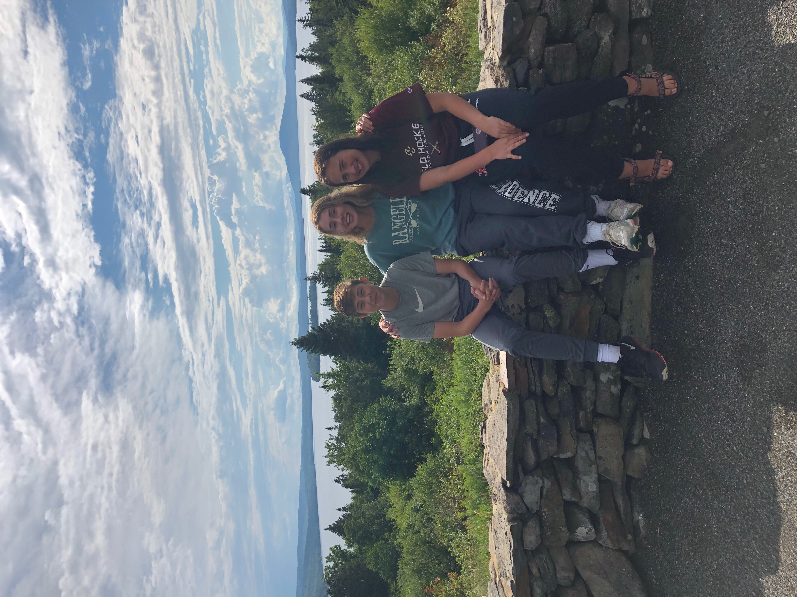
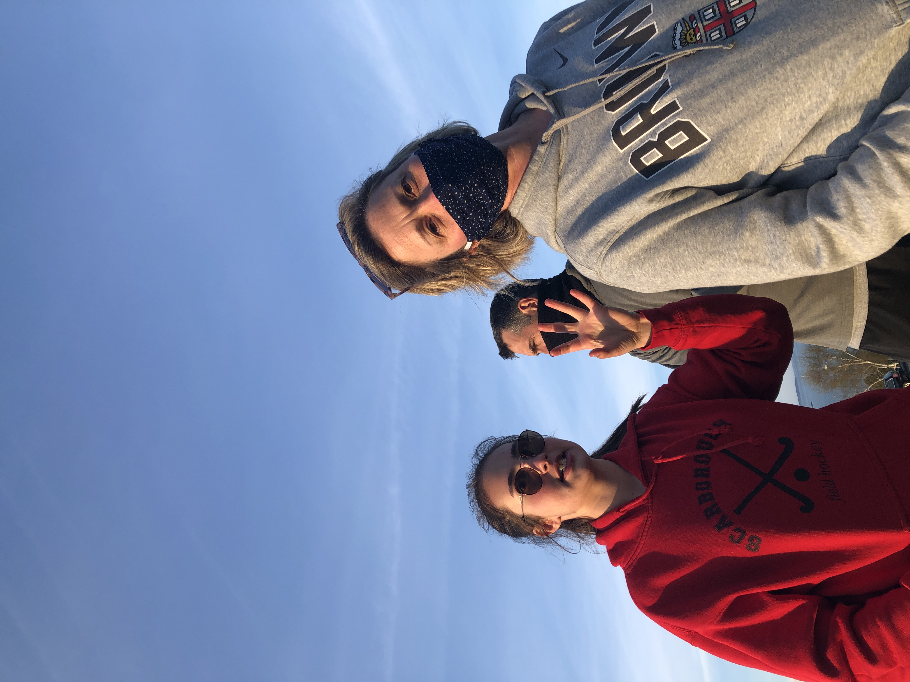

Through this pandemic I have learned so much about my family and I know it has brought us closer together. This summer we took an amazing week long trip to Rangeley, Maine where we did a lot of hiking and swimming in the lake. It was so nice to enjoy the simple things like the sunset and the 360 degree views of Quill Hill. We went to smalls falls during this trip and jumped into the swimming holes there which was a highlight for sure. I would 100% recommend going to Rangeley to take a week to just sit back, relax, swim in the lake, and good food.
Read more
Read less

In the spring of last year my family began taken almost daily "family walks" at the beach or even at Fuller Farms right near our house. It's crazy how quickly there became nothing to do and I began looking forward to going to Ferry Beach or Pleasant Hill Preserve just to walk around. These walks really brought my family together and we would bring frisbees or lacrosse sticks to pass around which made the Lockdown more enjoyable. Overall, I think going on family walks got old at some point this year, but I can't deny that they brought my family closer together which I'm very grateful for.
Read more
Read less